Journey 06 · Firenze Note 11 of 11 Field Note
What Is in a Bottle of Wine?
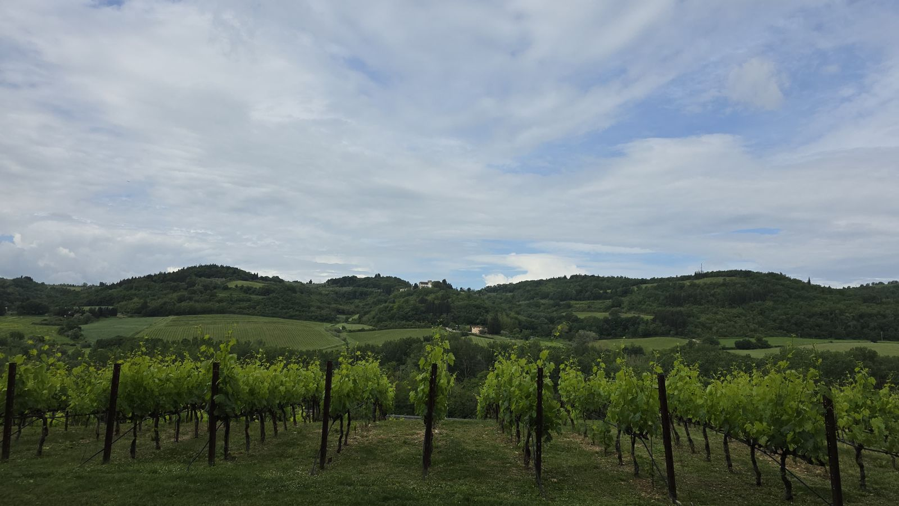
Field notes from Florence on inheritance, stewardship, and what beautiful things hold when you learn how to look closely.
I do not really drink wine, which feels like an important confession for a post about a winery. I can appreciate wine. I can taste it (mostly) politely. I can sometimes understand why someone else loves it. But most of the time, if I am honest, the wine itself is not what captures me.
What captures me is listening to people who love wine talk about wine.
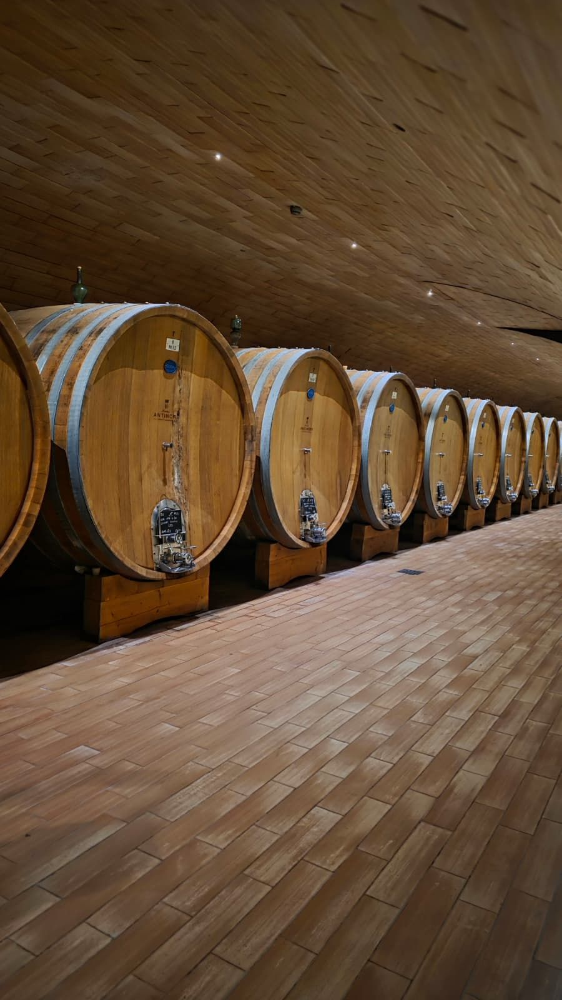
There is an energy people have when they are explaining something they know deeply and care about intensely. It does not really matter whether the subject is wine, leather, art, music, architecture, food, history, or a very strange musical instrument in a museum. I like being near that kind of knowledge, hearing people talk from inside a world they have spent years learning how to see.
Antinori nel Chianti Classico gave me a lot to listen to.
Somewhere in my mind, I had pictured the movie version of a winery: warm stone, old wood, a courtyard, dirt paths, vines arranged around something that looked as if it had been there for centuries. The kind of place that could belong almost anywhere wine becomes scenery.
That is not what we pulled up to.
It was bigger than I expected. Modern. Not what I came prepared to see. But standing in front of it, I understood something: you could build something entirely new and still have it belong to six centuries of history.
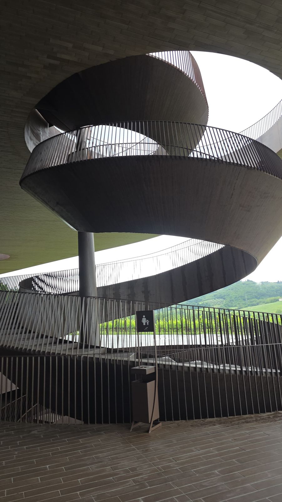
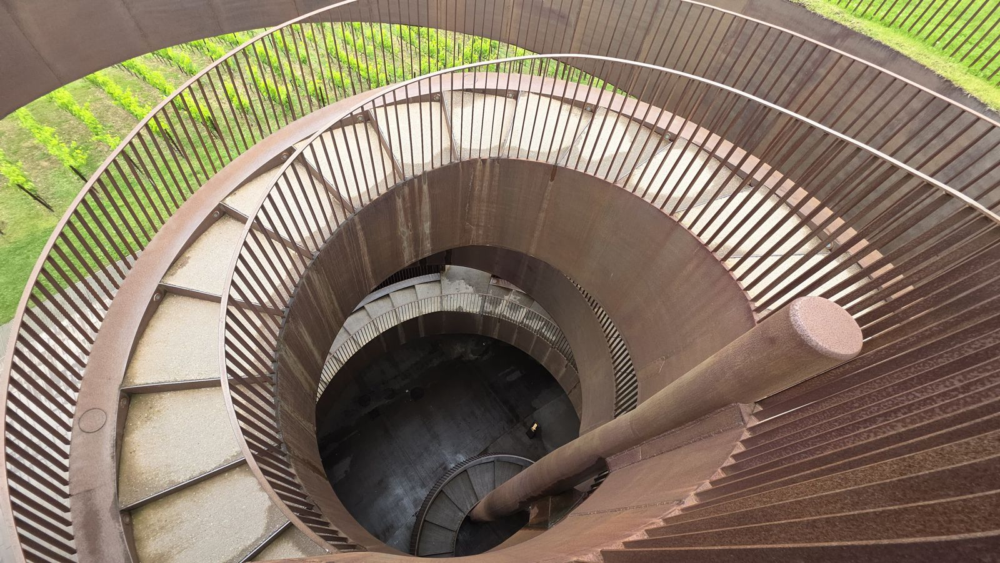
The roof becomes farmland. The structure recedes into the slope. The first thing you notice is the land. Only after that do the lines of the building begin to appear, as if they had been waiting inside the hill.
Antinori’s own description of the winery emphasizes this balance. The family’s story began in 1385, and the Chianti Classico winery opened in 2012 after twenty-six generations. It was built with locally sourced materials, designed to respect the Tuscan landscape, and planned for low environmental impact and energy savings. The winery’s façade is described as appearing almost like two horizontal cuts in the landscape, which fits the experience of arriving there better than any rustic fantasy would have.
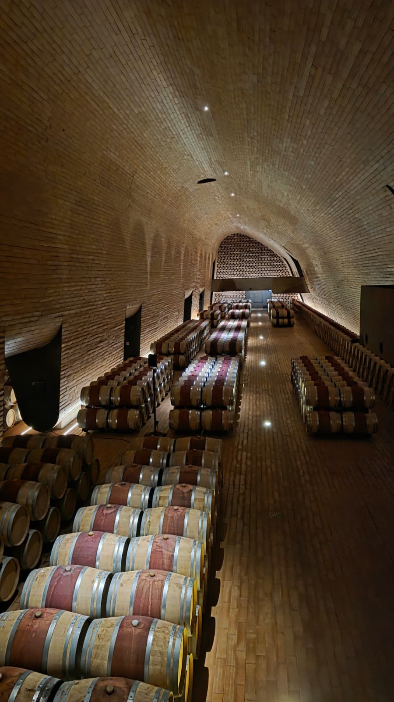
How do you build something new for a family with six centuries of history without turning tradition into decoration? How do you make a place that is efficient, beautiful, environmentally sensitive, and still connected to the values that brought it into being? How do you continue a story without pretending the next chapter has to look exactly like the last one?
I did not arrive as a wine person, but I could immediately recognize a design question.
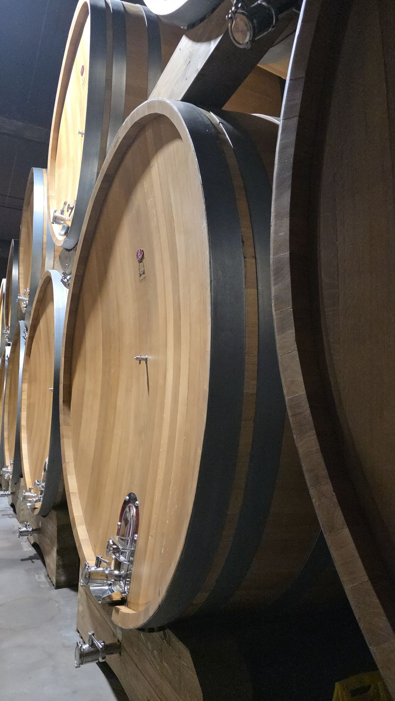
That question had been following me through Florence all week.
I had seen it at the leather school, where tradition did not mean repetition and craftsmanship has to find ways to innovate without breaking the work itself. I had seen it at the Accademia, where patronage made beauty possible and power left its fingerprints on the future. I had seen it in the walking tour, where women’s stories changed the map of the city once someone taught us where to look. I had felt it at dinner tables, in slow conversations, in care, in trust, in all the ways Florence kept reminding me that beautiful things are surrounded by more than we first see.
Antinori gathered many of those threads into one place.
On the surface, the answer to “what is in a bottle of wine?” is simple enough: grapes, fermentation, time, care. A winemaker’s knowledge. A vineyard’s soil. A year’s weather. A decision to harvest at exactly this moment, not sooner and not later.
But that is only what you can taste.
There is vision in a bottle of wine, the idea of what wine could be, passed down through generations and revised by each one. There is tradition layered so deeply that it can start to feel like a force of nature instead of choice. There are culture and values in the bottle: the standards people keep, the shortcuts they refuse, and the care they put into decisions most drinkers will never see.
There is family history too, not only the business story, but the family story written into the land, the name, the architecture, the label, the cellars, and the decisions made centuries ago that still shape decisions made now.
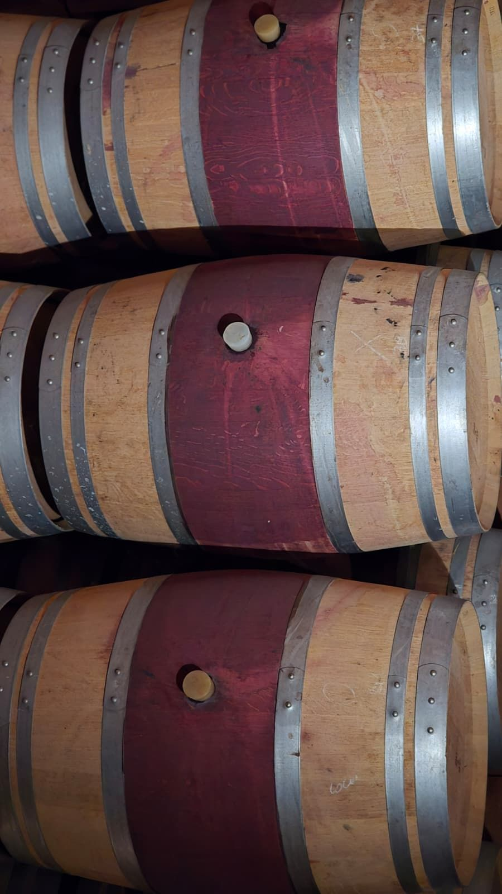
There is stewardship, the understanding that land is not simply something to own. It is something to inherit, tend, argue with, cry over, protect, and pass forward. There is care in a bottle of wine, though not the sentimental kind. Practical care. Technical care. Environmental care. The care of soil, vines, workers, tools, buildings, temperature, timing, and reputation. Care that has to survive contact with weather, markets, family expectations, and time.
Because markets are in the bottle too. It is easy to romanticize wine as landscape, family, tradition, and beauty. And it is all those things.
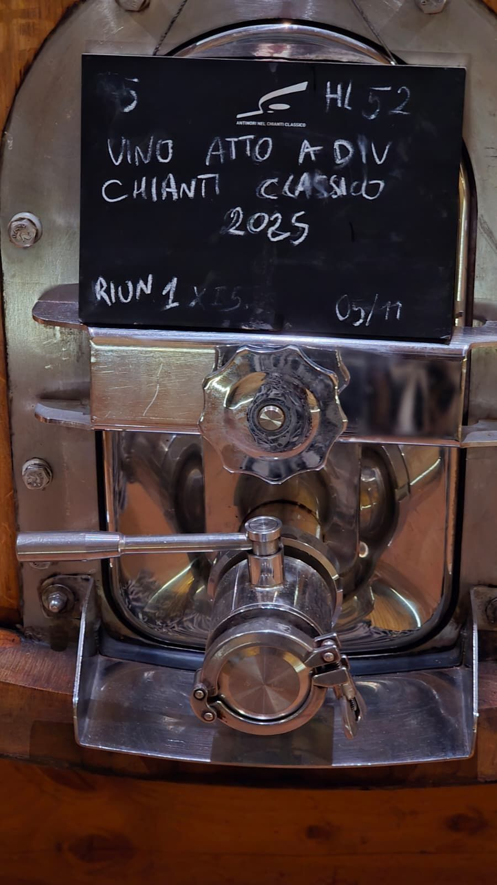
But it is also a product that has to survive in a world that often does not know how to value beautiful things unless they can be branded, exported, photographed, turned into data points and sold. There is strategy in a bottle of wine, not only business strategy, but the strategy of survival. How does a family business stay a family business in a world built for corporations? How do you honor what came before without becoming trapped by it? How do you change without losing the thread?
These stories and questions interested me more than the wine itself.
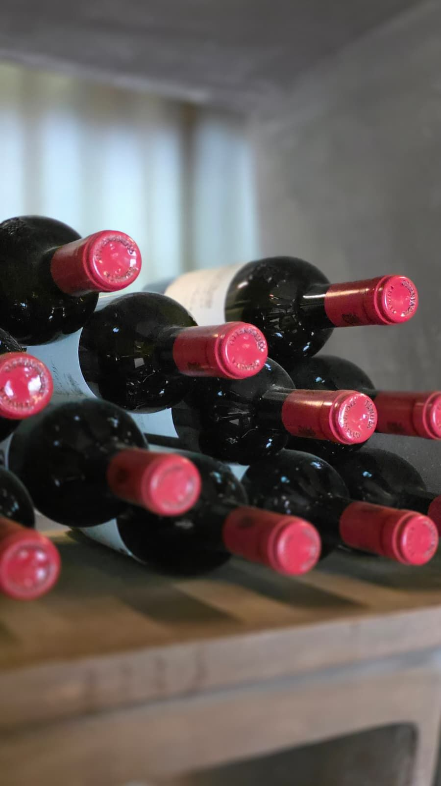
I do not mean that dismissively. The wine mattered. Of course it mattered. But for me, the more compelling thing was everything gathered around it: the family history, the art, the architecture, the land, the tension between tradition and innovation, the problem of keeping something alive across generations.
This Florence series has kept returning to the question of what beautiful things make visible when someone teaches you how to look. A museum is not only a museum. A hospital is not only a hospital. A bicycle is not only a bicycle. A leather bag is not only a leather bag. A bottle of wine is not only a bottle of wine.
That does not mean everything has to become a metaphor or a lesson. Beautiful things can be valuable simply because they exist. A sculpture does not need to improve anyone’s leadership. A bag does not need to become a philosophical argument. A glass of wine does not need to justify itself as cultural analysis before someone is allowed to enjoy it.
But when you look closely, it changes the experience.
It does not make beauty smaller. It gives beauty more company.
At some point during our discussion with Albiera Antinori, someone asked her what makes a good leader. Her answer moved through family, collaboration, responsibility, and the complexity of carrying a business forward.
In my notes, I reduced it to an image I could hold onto: no single grape makes the wine.
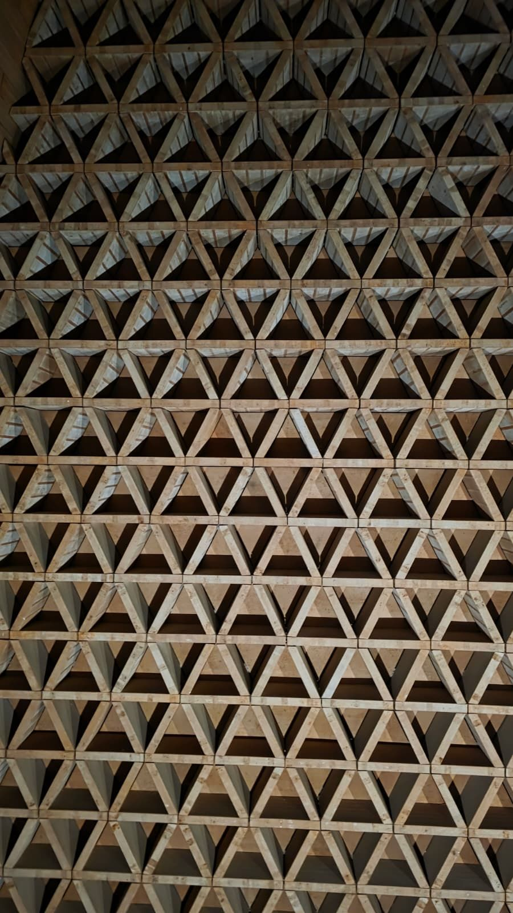
A grape alone does not make wine. A vine alone does not make a vineyard. A family alone does not make a legacy. Tradition alone does not guarantee a future. Innovation alone does not know what it is responsible to. The work happens among things: land, weather, labor, memory, science, risk, patience, community, conflict, taste, timing, and care.
That is why this feels like the right place to end the Florence series, even though I still do not think wine is my thing. I did not leave converted into someone who wants to drink something that manages to be both wet and “dry”, or pretend I can identify everything happening in the glass.
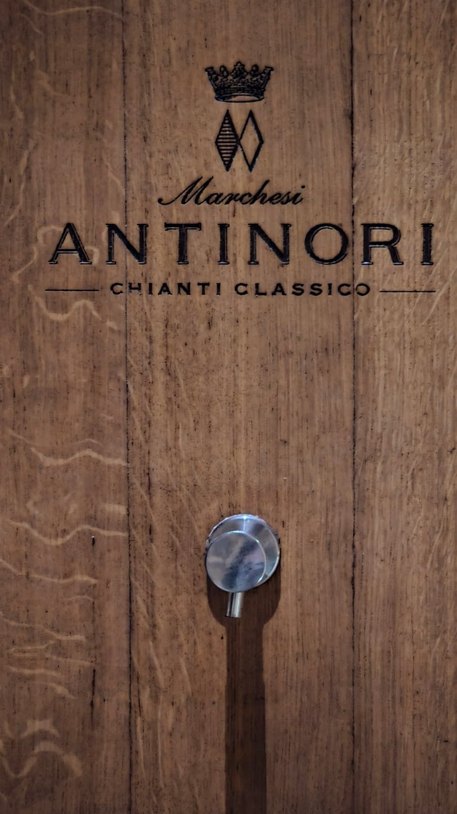
But I did leave with more respect for the world inside the bottle. I understood better why people who love wine can talk about it as if they are talking about land, memory, family, weather, beauty, business, and time all at once.
So what is in a bottle of wine?
Grapes, yes. Fermentation, weather, soil, and time. But also family, architecture, inheritance, conflict, markets, tradition, innovation, stewardship, community and the stubborn decision to keep making something beautiful in a world that does not always know how to value it.
That may be what Florence kept teaching me across museums and meals, bicycles and hospitals, paintings and wine cellars. Beautiful things do not have to justify themselves before they matter. They can be valuable simply because they exist.
And still, when you learn how to look closely, they begin to show what has been gathered into them all along.
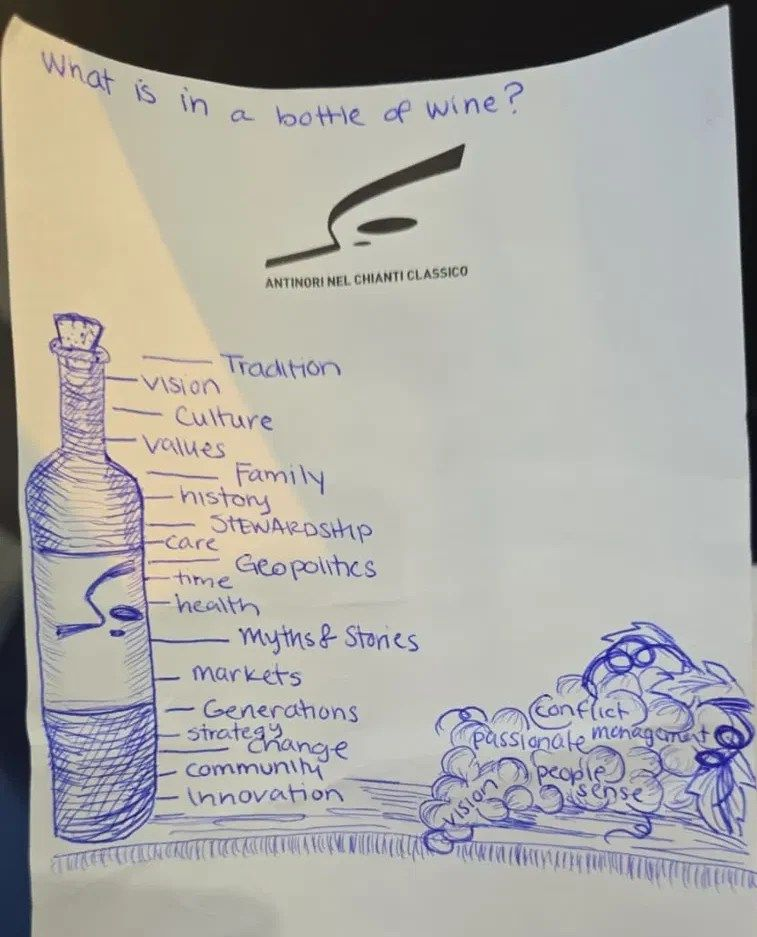
Mentioned in
Originally published at fieldnotesfromabroad.com/2026/05/27/what-is-in-a-bottle-of-wine/